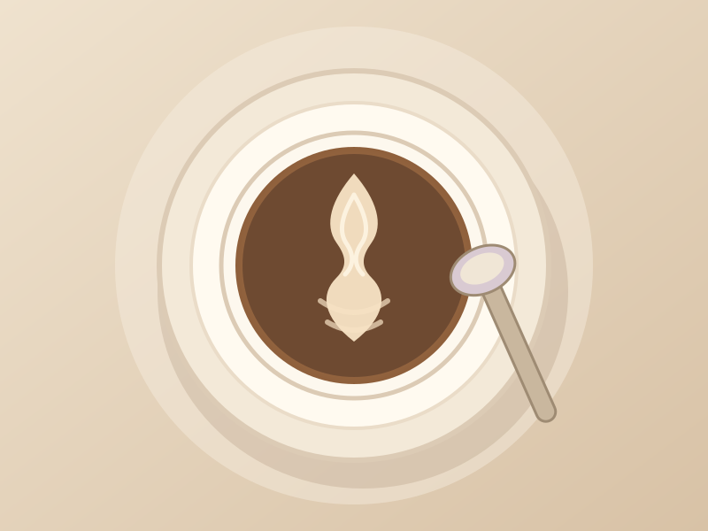

Кофе
Эспрессо
150 ₽Плотный, с карамельной сладостью и мягкой кислотой.
Американо
190 ₽Эспрессо с горячей водой, чистый и ясный вкус.
Капучино
260 ₽Двойной эспрессо и бархатная молочная пена.
Флэт уайт
290 ₽Больше кофе, меньше молока: для тех, кто любит насыщенность.
Фильтр-кофе
280 ₽Заваривается по заказу, сорт зёрен меняется каждую неделю.